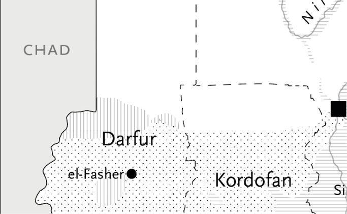

Unidad 3

Sudán en la actualidad
Joshua Craze (2025), “Sudan’s World War”, Sidecar – New Left Review.Artículo de análisis político sobre la guerra civil sudanesa y su inserción en dinámicas regionales e internacionales.